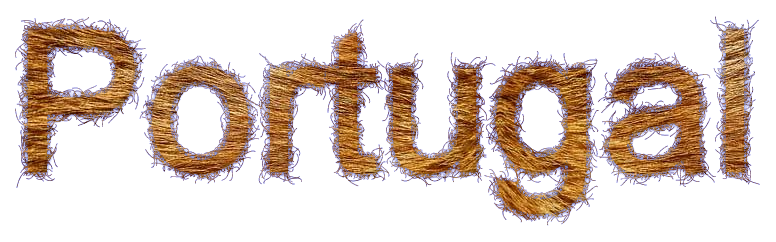
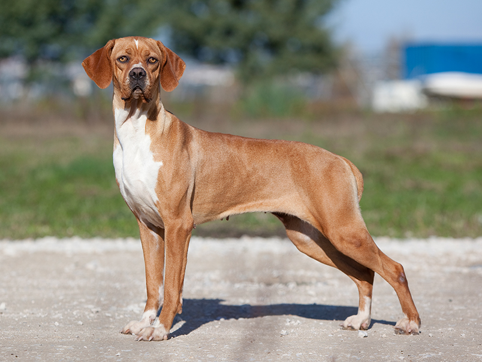
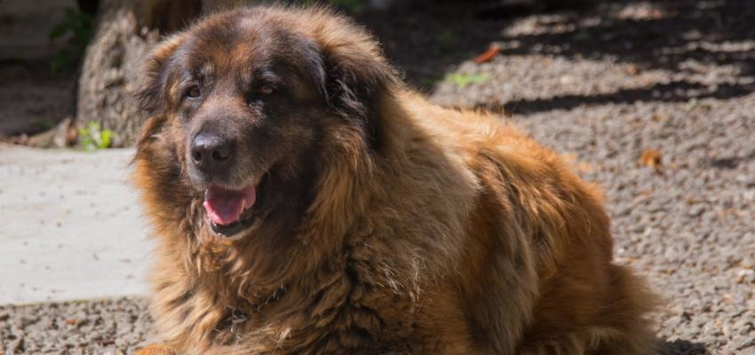
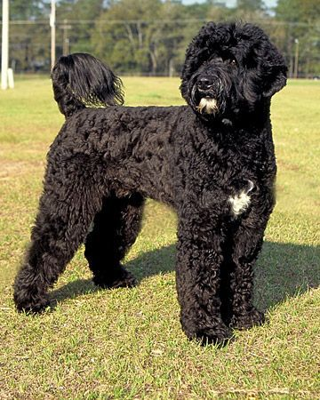

Perdigueiro português
Um caçador por excelência, com todas as características que isso implica, o Perdigueiro Português é famoso pelo seu olfacto apurado, instinto caçador e com um capacidade de concentração acima da média, podendo trabalhar em qualquer tipo de terreno. O seu temperamento dócil, estável e tranquilo faz dele também um excelente animal de companhia, estando sempre disposto a agradar ao dono.
| Expectativa de Vida | Altura | Peso | |
|---|---|---|---|
| Mínimo | 10 Anos | 48 cm | 11 kg |
| Máximo | 13 Anos | 60 cm | 13 kg |
Cão da Serra da Estrela
A raça é de aspeto atento, calmo e expressivo. Inseparável companheiro do pastor e guarda fiel ao rebanho, defende-o contra os predadores e ladrões de gado. Magnífico guarda de quintas de casas, desconfiado perante os estranhos e tipicamente dócil com o seu dono. Os desafios com que esta raça se deparou, tendo que enfrentar lobos e resistir a difíceis condições climatéricas, levou a que o seu desenvolvimento se baseasse, quase exclusivamente, no método de seleção natural.
| Expectativa de Vida | Altura | Peso | |
|---|---|---|---|
| Mínimo | 10 Anos | 62 cm | 30 kg |
| Máximo | 12 Anos | 72 cm | 50 kg |
Cão de água português
O Cão de Água Português é uma raça de cães originária do Algarve, em Portugal. É uma raça de tamanho médio, de constituição forte, compacta e musculatura bem desenvolvida, no que é considerado um animal excepcionalmente inteligente, com temperamento ativo mas também obediente. É também muito resistente à fatiga. É um exímio nadador, sendo capaz de mergulhar e nadar debaixo de água para recuperar objetos perdidos.
| Expectativa de Vida | Altura | Peso | |
|---|---|---|---|
| Mínimo | 10 Anos | 43 cm | 16 kg |
| Máximo | 14 Anos | 70 cm | 25 kg |